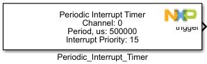
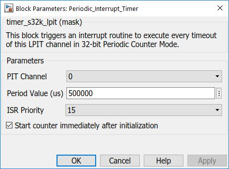

Periodic Interrupt Timer (PIT) Block
This block is used to trigger an interrupt routine periodically.
Block Image
Inputs:
- None
Outputs:
- Function-call
Parameters and Dialog Box
PIT Channel
- 0 – 3
PIT Timeout Value (us)
Timeout period for PIT interrupts.
- Based on system clock rate selected.
Interrupt Priority
Interrupt priority level
- 0 – 15
Start counter immediately after initialization
- Checked – Starts the counter immediately after initialization
- Unchecked – The counter is not startet, PIT_Counter_Start_Sto block is required
Block Dependency
- None
Block Miscellaneous Details
- None